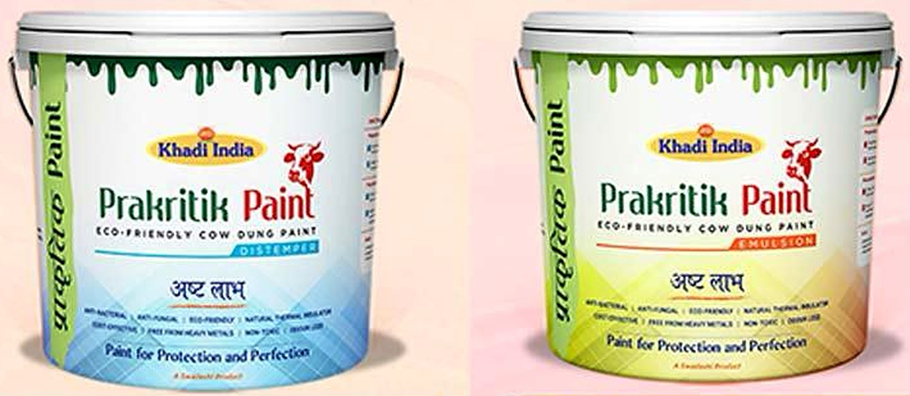
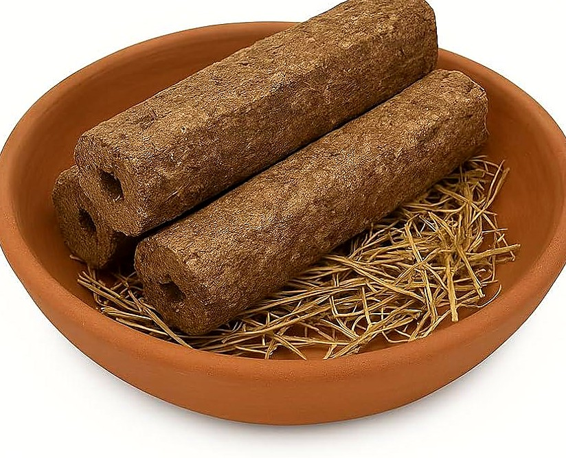
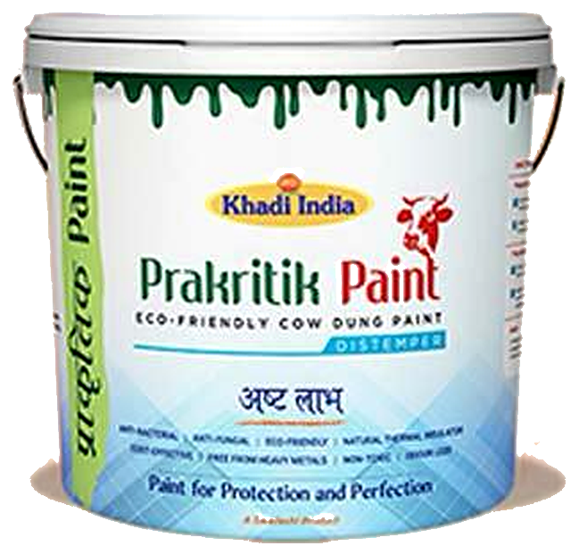
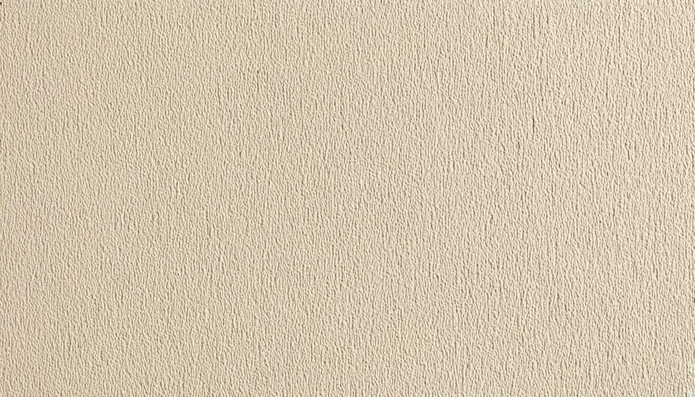
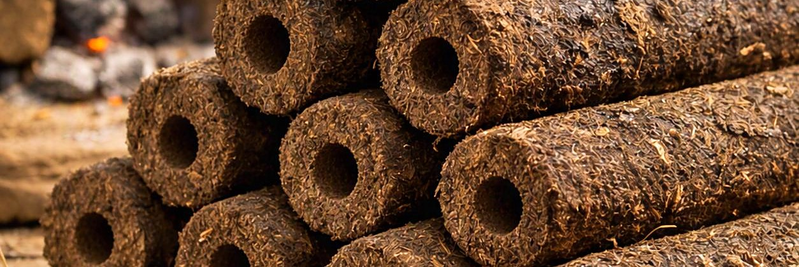

Stage 01
Raw Material
Cow dung — a natural material long valued in traditional Indian homes.
Nature provides the resource. Gaurikrit explores how cow dung can be carried into practical material solutions — from Prakritik Paint to fuel and utility applications.

Eco-Paints Documented family
Traditional India has long recognised cow dung as a useful material. Gaurikrit's direction is to carry that resource into practical contemporary applications — from naturally derived material to products for walls, energy and everyday use.
Cow dung — a natural material long valued in traditional Indian homes.

The resource is processed and developed into useful working materials.

Products for walls, energy and everyday use — nothing goes to waste.
Cow dung is the shared material beginning. Gaurikrit develops it in four directions — Eco-Paints is the documented family; the others are development directions presented without invented products.
Healthy walls inspired by nature.
Cow dung-based wall coatings in Distemper and Emulsion formats — the most developed family in the Gaurikrit ecosystem, documented with full product specifications.

Saving trees without changing traditions.
A dense log format developed as an alternative to conventional wood — directed at ceremonial and traditional applications where wood has long been the default.
Renewable energy from natural biomass.
Biomass-based fuel logs — a renewable energy direction that explores how natural material streams can reduce reliance on fossil fuels.
Sustainable products for everyday living.
Practical daily-use products from naturally derived materials — a plastic-reducing direction for homes, gardens and everyday routines.
One continuous cycle: the resource enters, is developed, becomes useful products — and creates a new value cycle.
Natural and agricultural material streams are gathered.
The raw material is prepared and stabilised.
It is developed into useful working materials.
Materials are formed into product families.
Walls, energy and everyday-use applications.
Each use replaces a less sustainable alternative.
The cycle renews — nothing goes to waste.
The one family with full product documentation — two formats, supplied specifications, real client photography and a shade catalogue.
To become a leading circular-economy company transforming natural and agricultural resources into sustainable products for homes, industries and communities.
To replace less sustainable alternatives with practical, accessible and environmentally responsible product solutions.